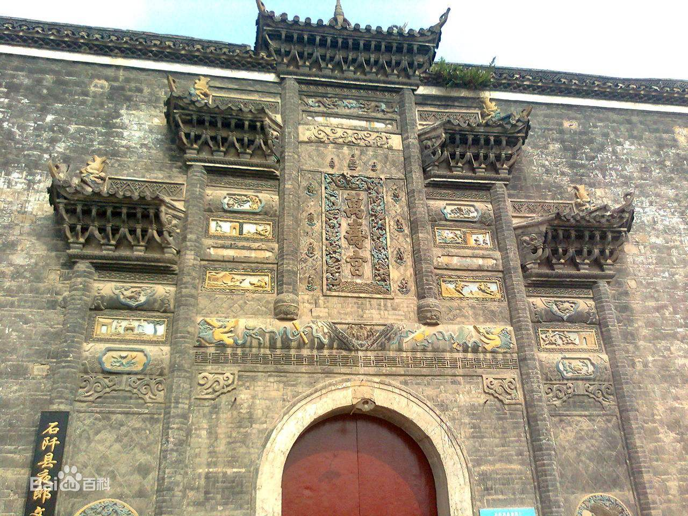
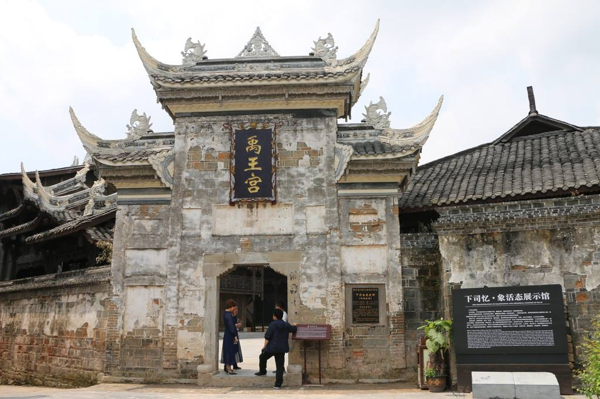

禹王宫


简介: 禹王宫，位于四川省南江县长赤镇，建于清嘉庆二年（1797年）；为四合院中式砖木结构建筑。山门前壁系镂空青砖浮雕花卉、飞禽、走兽、喜字图案和张飞所当阳桥图、白鹤寿星图等，刻工精美，表情生动。另安徽省怀远县也建有禹王宫。
历史沿革: 1933年中国工农红军第四方面军长征过南江，建立长赤县苏维埃政府于禹王宫，前殿三道石门框上，红军刻的“谁是世界上的创造者，只有我们劳苦工农”，“铲除封建势力，实行土地革命”；“只归生产者所有，那里容得寄生虫”等标语，字大25厘米，今犹完整。前殿内还有10多条红军标语。左右厢殿，悬空建有回廊、栏杆。
布局结构: 1933年中国工农红军第四方面军长征过南江，建立长赤县苏维埃政府于禹王宫，前殿三道石门框上，红军刻的“谁是世界上的创造者，只有我们劳苦工农”，“铲除封建势力，实行土地革命”；“只归生产者所有，那里容得寄生虫”等标语，字大25厘米，今犹完整。前殿内还有10多条红军标语。左右厢殿，悬空建有回廊、栏杆。